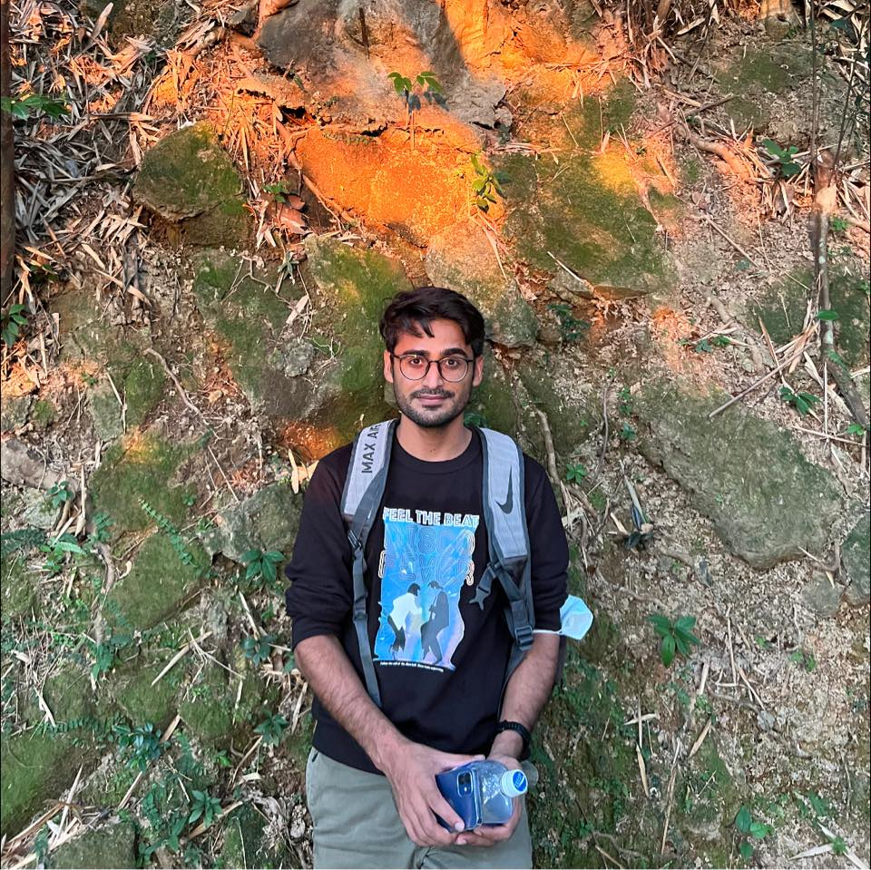
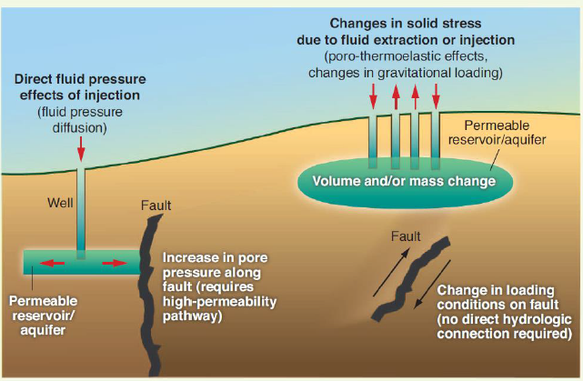
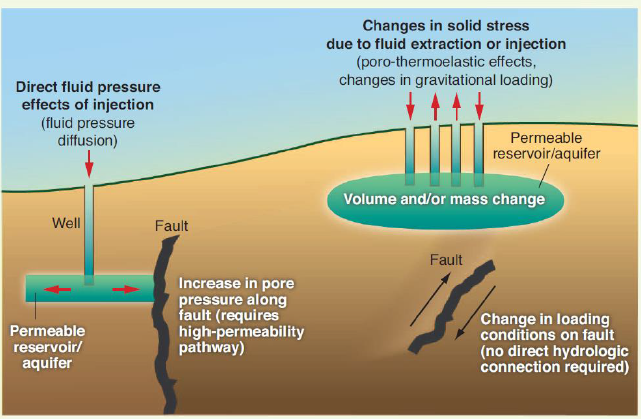
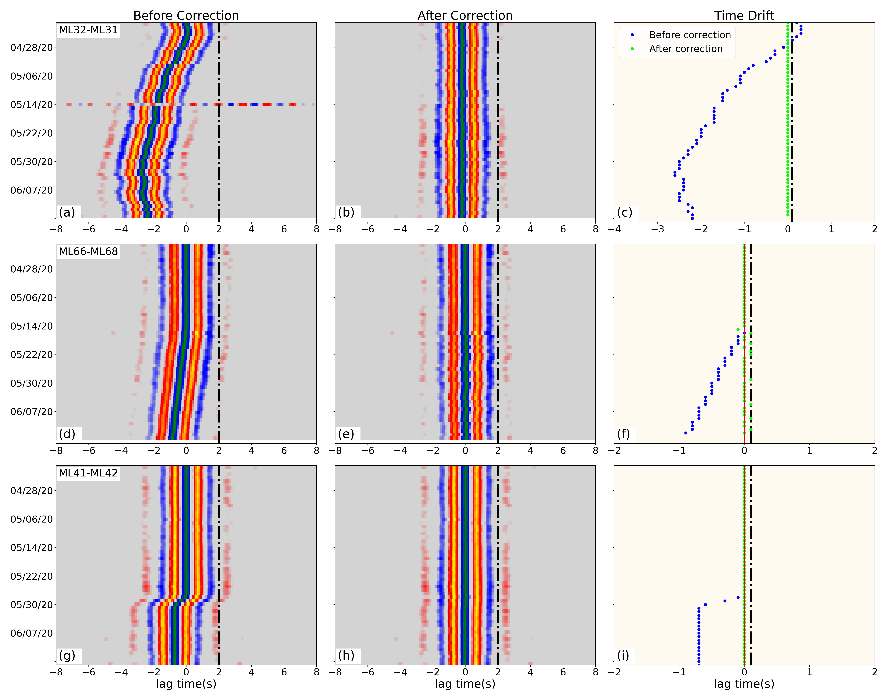
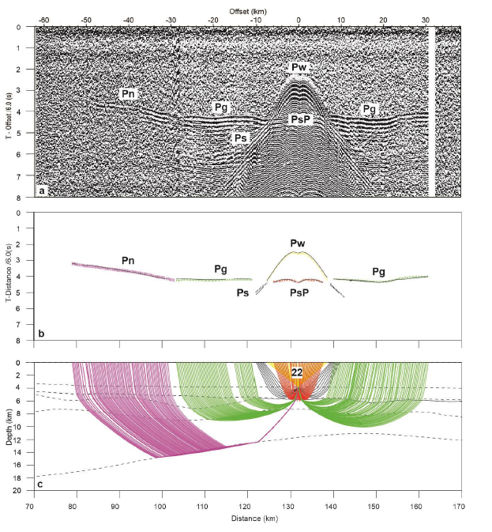

Aqeel Abbas's Personal Webpage
 I am a PhD student at The Chinese University of Hong Kong , Hong Kong, SAR, since August 2020. My work focuses on Induced Earthquake in Sichuan Basin, China. I have done my masters degree from Ocean College, Zhejiang University , China. Additionally, my Resume and LinkedIn has more information about myself. The details of some of my research projects are provided below:

Research projects

Induced Earthquakes
Hydraulic fracturing (HF) is a standard technique to enhance reservoir production during unconventional oil and gas development.
However, it has induced small to moderate earthquakes around the world. Injected fluid plays a critical role in controlling the fault reactivation
and consequently induced seismicity. The fluid migration to the fault planes can lead to an increase in pore pressure hence weakening the
fault strength and promoting fault slip. In addition, the stress change due to the poroelastic effect caused by fluid injection is another mechanism for induced seismicity.
Therefore, it is crucial to understand the role of injected fluid in induced earthquakes and mitigating seismic hazards associated with them.
Seismic attenuation (Q-1) is classified to investigate the spatial variation of fluid in the subsurface using the coda normalization method.
Usually, the attenuation increases with the presence of fluids in the rock matrix. In this study, we will apply this technique to estimate the 3D seismic attenuation
model in Weiyuan Shale Gas Field (WSGF), located in the Sichuan basin using the seismic data from our temporary network (deployed for 3 months) and
permanent stations from Sichuan Earthquake Agency.

Clock Drift Inspection and Correction in Seismic Data
Temporary seismic network deployments are widely used both on land and offshore to improve our understanding of earthquake processes and the internal structure of the Earth.
However, some temporary stations suffer from incorrect timing records and thus pose a challenge to fully utilize the valuable data.
To inspect and fix such time problems, we examine the OBS data from the Mariana subduction zone and land data from a dense array deployed in
the Weiyuan shale gas field, Sichuan, China.
Initially, we inspected the teleseismic and local events waveforms to evaluate the overall clock drift and data quality in both datasets.
Later, the ambient noise cross-correlation function (NCCF) is adopted by using daily waveforms with different stratigies for both Land and OBS datasets.
All the clock drifts in both dataset are successfully analysed and corrected.
The codes are avaible upon request at aqeelabbas(@)link.cuhk.edu.hk . Deatils of the project are available in pdfs present in my publication page.

Ocean Bottom Seismic (OBS) Data Processing and interpretation
The continental margin of the northern South China Sea (SCS) is an excellent region to study the lithosphere rifting and breakup process.
It has undergone a transition from an active to passive continental margin during its tectonic evolution. The nature of transitional crust is a key to
unlocking the evolution process, and becomes a subject of intense studies. In order to understand the complex crustal features and magmatism along the
transition zone, high resolution seismic structures should be imaged. We construct P-wave velocity (Vp) structures by using
2-D forward ray-tracing (RayInvr) and travel-time tomography (Tomo2D) based on ocean bottom seismic (OBS) and multiple channel reflection seismic (MCS)
data acquired along a geophysical profile 2017-1. The obtained model revealed the variation in crustal structure, characteristics of transitional crust
and formation of high velocity layer beneath the lower crust in the northern SCS.